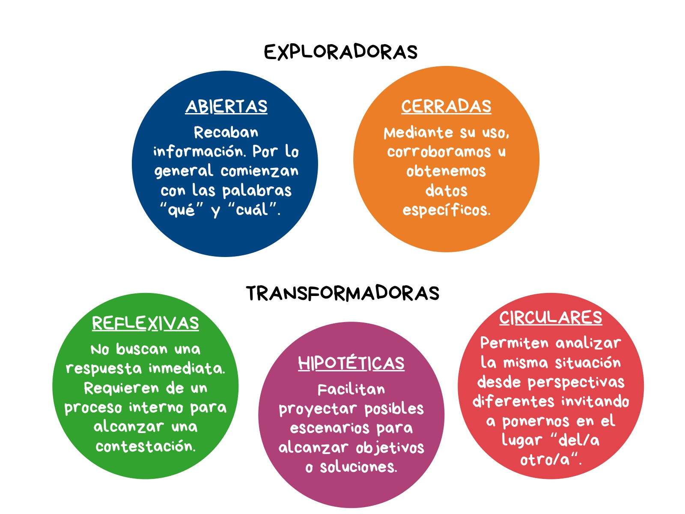

♦️La importancia de preguntar
Cada pregunta tiene un protagonismo central en procesos de abordaje y resolución pacífica de conflictos. La autora Marines Suáres la define como una intervención privilegiada al ser aplicada en diferentes momentos de la resolución de conflictos en general y en los procesos de mediación en particular.
Preguntamos para entender, reflexionar y abrir caminos hacia la comprensión mutua que conduzcan a una solución. A la vez, mediante su formulación recolectamos información, evitamos suposiciones o malos entendidos, eliminamos prejuicios y generamos un clima de mayor confianza con quienes nos comunicamos.
Siguiendo a Suáres, a modo descriptivo global, existen dos grandes grupos de preguntas:
Exploradoras
Aquellas que posibilitan comprender intereses, conocer narrativas, vivencias y puntos de vista, colaborando con la definición del problema.
Transformadoras
Las que invitan a reflexionar y posicionarse desde otras perspectivas frente a una situación, colaborando en su redefinición o replanteo, permitiendo encontrar y explicitar los intereses diferentes y compartidos entre las partes involucradas.
Dentro de cada grupo, encontramos la siguiente división:
